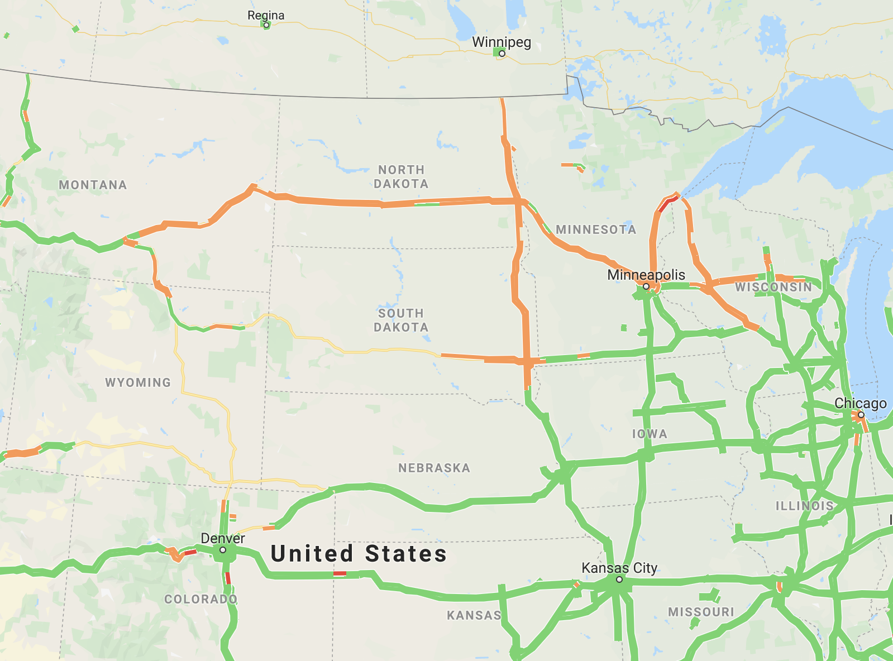

Maps of Our Times

Captured 18:20 11.30.2019 | Continental United States
Major winter storm sweeping through the interiors of US, causing delays along highways and affecting post-thanksgiving travel.
Keyword: Weather / Traffic

Captured 20:54 11.20.2019 | Los Angeles, CA
Police Helicopter Circling Over the Vernon Neighborhood in Los Angeles
Keyword: Police / Surveillance

Captured 21:33 11.18.2019 | Kowloon, Hong Kong
Riot Police Beseige the Polytechnic University in Hong Kong, Where Hundreds of Student Protestors Were Trapped Inside.
Keyword: Police / Protest / Violence / Politics

Captured 11.18.2019 | Kowloon, Hong Kong
Riot Police Beseige the Polytechnic University in Hong Kong, Where Hundreds of Student Protestors Were Trapped Inside.
Keyword: Police / Protest / Violence / Politics

Captured 17:03 02.27.2019 | South Asia
Pakistan and Afghanistan closed their airspaces to all civilian traffic due to armed conflicts between Pakistan and India.
Keyword: Aviation / War / Politics

Captured 10:16 12.11.2017 | New York, NY
The aftermath of a failed pipe-bomb attack inside the Times Square – 42nd St Subway Station.
Keyword: Violence / Traffic / Police

Captured 13:05 09.10.2017 | Florida
Hurricane Irma making landfall in Florida, grounding all flights in the region.
Keyword: Weather / Aviation